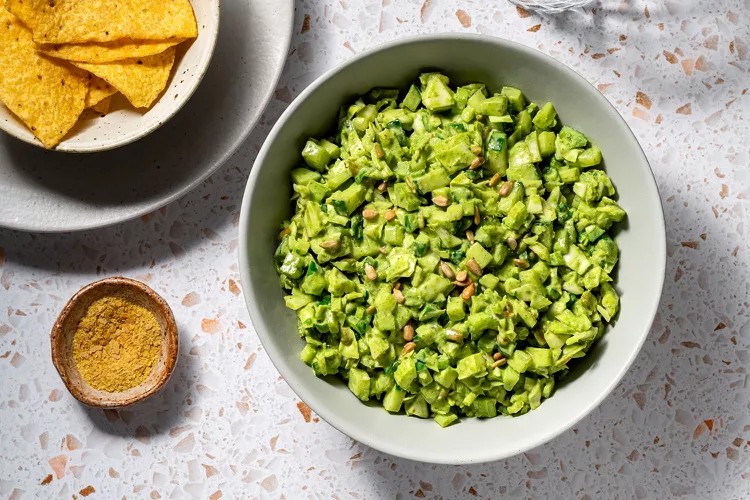

Ingredients & Directions
Green Goddess Caesar Dressing
- 1/2 cup tahini, stirred
- 1/4 cup freshly squeezed lemon juice
- 3 tablespoons warm water, more as needed
- 2 tablespoons red wine vinegar
- 2 tablespoons extra-virgin olive oil
- 2 teaspoons Dijon mustard
- 1 teaspoon agave or maple syrup
- 1 1/2 cups baby spinach leaves, packed
- 3/4 cup fresh basil leaves, packed
- 1/4 cup coarsely chopped chives, or dark green parts of green onions
- 2 cloves garlic
- 1/4 cup nutritional yeast, more for garnish, optional
- 1/2 teaspoon kosher salt, more to taste
- 1/4 teaspoon freshly ground black pepper
Gather the ingredients.
To make the dressing, add the tahini, lemon juice, warm water, red wine vinegar, oil, mustard, agave, spinach, basil, chives, garlic, nutritional yeast, salt, and pepper to a blender.
Blend until very smooth and creamy. If too thick, add 1 teaspoon warm water at a time as needed to reach desired consistency.
Green Goddess Salad
- 1 small head or 1/2 large head green cabbage
- 3 large stalks celery
- 1 medium hothouse cucumber
- 1/2 green bell pepper
- 4 medium green onions
- 1/3 cup roasted sunflower seeds, more for garnish, optional
To make the salad, slice the cabbage into quarters. Remove the tough stem using a sharp knife and then dice. Place in a large bowl
Dice the celery, cucumber, and pepper. Thinly slice the green onions. Add to the bowl with the cabbage.
Pour the dressing over the vegetables, then add the sunflower seeds. Toss to coat. Adjust the seasoning with salt and pepper to taste. Serve garnish with additional roasted sunflower seeds and nutritional yeast, if desired.